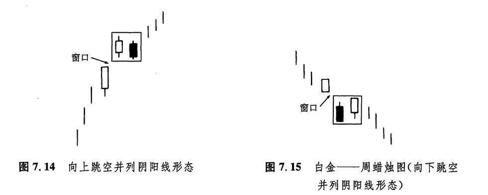
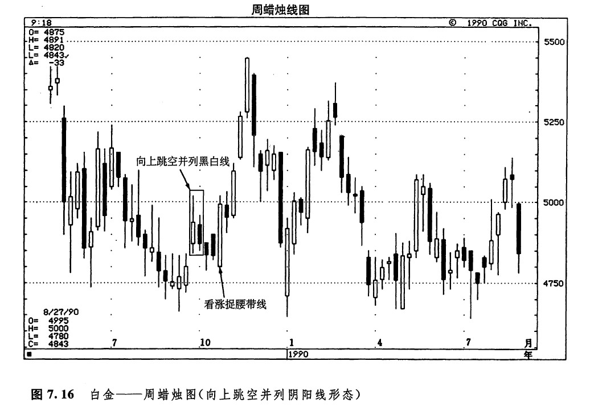

向上跳空并列黑白蜡烛线形态（或者称为向上跳空并列阴阳线形态，如图7.14所示）也是一种持续形态，它的形成过程大体是这样的。市场本处于上升趋势中。这时，出现了一根向上跳空的白色蜡烛线。在这根白色蜡烛线后，紧跟着另一根黑色的蜡烛线。这根黑色蜡烛线的开市价位于前一个白色实体之内，收市价位于前一个白色实体之下。在这样的情况下，这根黑色蜡烛线的收市价，就构成了一个买入点。如果在市场回头填补了这里的跳空（即关闭了该窗口）后，抛售压力依然很明显的话，那么这个向上跳空并列黑白蜡烛线形态的看涨意义就不再成立了。在向下跳空并列黑白蜡烛线形态（也称为向下跳空并列阴阳线形态，如图7.15所示）中，基本概念与上述形态是相同的，只不过方向相反。在向上跳空和向下跳空并列黑白蜡烛线形态中，两根蜡烛线实体的大小应当不相上下。这两种并列黑白线跳空形态都很少见。
请看图7.16，其中有一个向上跳空并列黑白蜡烛线形态的实例。在9月的最后一周，市场上出现了一个小的向上价格跳空，形成跳空的是一根白色蜡烛线。下一周是一根黑色蜡烛线，其开市价位于上述蜡烛线白色实体的内部，收市价则低于该白色实体的开市价。这样一来，就形成了一个向上跳空并列黑白蜡烛线形态。请注意，本形态的窗口虽然小，但在10月市场向下回撤的过程中依然起到了支撑作用。图示的看涨捉腰带线形态标志着当前上冲行情的发轫。


下一篇：高价位和低价位跳空突破形态
上一篇：窗口